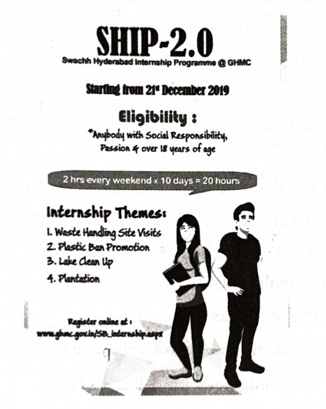
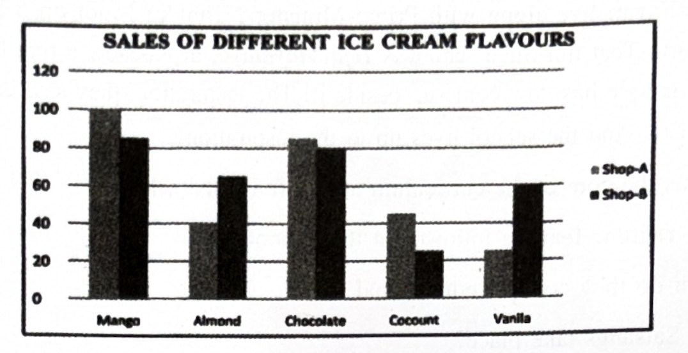

(Units 2, 6, 10, 13–16 & 25)
Marks: 40
Time: 1 ½ Hrs
1. Answer ANY ONE of the following questions in about 100 words. (1 × 4 = 4)
a) But when the movement was actually started, women were everywhere at the forefront. Elaborate.
b) Name some legislative reforms that seek to establish the equality of women.
2. Answer ANY ONE of the following questions in about 100 words. (1 × 4 = 4)
a) Substantiate the critical comment that the poem, Awake is a patriotic lyric.
b) How do Indians plan to set their mother again in the forefront of glory?
3. Answer ANY ONE of the following questions in about 100 words. (1 × 4 = 4)
a) “Love, sacrifice and generosity are the essential elements for happy living.” Explain this statement with reference to the story A Gift for Christmas.
b) Sketch the character of Jim.
4. Read the following passage and answer ANY FIVE questions given below: (5 × 1 = 5)
Della’s white fingers quickly opened the package. And then at first a scream of joy followed by a quick feminine change to tears. For, there lay the combs—the set of combs, side and back, that Della had seen in a Broadway window and liked so much. They were beautiful combs, so expensive and they were hers now. But alas, the hair in which she was to wear them was sold and gone! She took them up lovingly, smiled through her tears and said, “My hair grows so fast, Jim!”
i) Who gave the package to Della?
ii) What was Della’s reaction at first?
iii) How did her joy change?
iv) What did Della find in the package?
v) Where had she seen the combs earlier?
vi) The combs were inexpensive. Write true or false.
vii) Write the antonym of the word happy from the passage.
viii) Write the synonym of the word shout from the passage.
5. Read the following passage and answer ANY FIVE questions given below: (5 × 1 = 5)
A World of Books Or a Book of the World!
Learning there is pure fun. Life skills form the core of the curriculum. Lessons are drawn from the book of the world, not just from the world of academic books. Field visits are a regular feature. Educational tours are annual events. Gardening is a hobby. In vast playgrounds, they discuss physics principles. Classrooms get converted into playfields. The day dawns with games and physical activities. Reading newspapers is followed by Satsang discussions. Letter writing, story writing, book reviews, stage performance, songs, dances, drawing etc. are quite common activities here. Quizzes top them all. Prizes won in national and state level competitions number in hundreds. Everyone associated with this school was on cloud nine when an eighth-grade girl by name Namrutha watched Chandrayaan live along with Prime Minister Narendra Modi on 6 September, 2019 from ISRO, Bengaluru. That fun-filled school is Teja Vidyalaya, at Kodada, a true temple of learning; and surprisingly, a temple has now come up beside it! The inspiration, they say, is Rishi Valley of Jiddu Krishna Murthy. And the school lives up to the inspiration!
i) What forms the core of the curriculum at this fun-filled school?
ii) Name the regular feature followed at this school.
iii) How often do they conduct educational tours?
iv) When do Satsangs take place?
v) Where does the inspiration to run such a school come from?
vi) Write the idiom used in the passage to mean extremely happy.
vii) Pick out the word from the passage that means the central part / essence.
viii) Mark stress on the right syllable of the word inspiration.
6. Study the following advertisement and answer ANY FIVE questions that follow. (5 × 1 = 5)

i) Expand SHIP.
ii) What are the eligibility criteria for participating in the programme?
iii) Can very young boys and girls participate in this programme?
iv) State any two themes of the internship programme.
v) Registration is both online and offline. Write true or false.
vi) When is the programme scheduled to begin?
vii) The number of hours of the schedule is (Fill in the blank.)
viii) Write the word used in the ad to mean ‘a short term training period for practical experience’.
7. Study the bar graph below and answer ANY FOUR questions given after it. (5 × 1 = 5)

i) What does the bar graph present?
ii) Which flavour of ice cream do people like the most in shop A?
iii) How many almond ice creams are sold in shop B?
iv) Find the total number of chocolate ice creams sold in shop A and shop B.
v) 30 coconut ice creams are sold in ________.
vi) Which flavour of ice cream do people like most in shop B, Chocolate or Vanilla?
vii) How many mango ice creams are sold in shop A?
viii) How many ice cream flavours are shown in the graph?
8. Rewrite the following passage using FOUR of the punctuation marks wherever necessary. (4 × 1 = 4)
The brahmo samaj led the movement for emancipation. The ancient rules of purdah were broken and brahmo women moved freely in society; but this was but a false dawn as it was far in advance of popular opinion. The Brahmo Samaj led the movement for emancipation. The ancient rules of purdah were broken and Brahmo women moved freely in society; but this was but a false dawn as it was far in advance of popular opinion.
9. Match the following words in Column ‘A’ with their definitions in Column ‘B’. (5 × 1 = 5)
| Column A | Column B |
|---|---|
| i) amphibious | a) lasting for a very short time |
| ii) antidote | b) designed to cause death |
| iii) ephemeral | c) living on land as well as in water |
| iv) lethal | d) someone who has a lot of experience in a field |
| v) veteran | e) a substance that can act against the effect of poison |